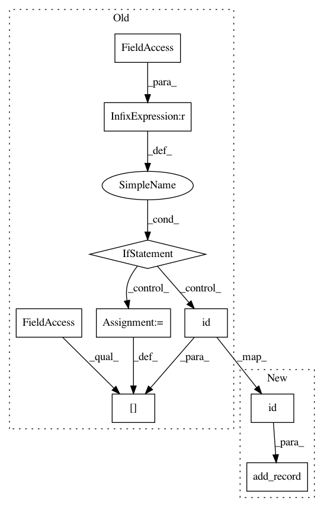

192a807b39bc029c273c2d1349fb73850ed9484c,nni/retiarii/nn/pytorch/nn.py,ModuleList,__init__,#ModuleList#,99
Before Change
class ModuleList(nn.ModuleList):
def __init__(self, *args):
global _records
if _records is not None:
_records[id(self)] = {} // no args need to be recorded
super(ModuleList, self).__init__(*args)
def wrap_module(original_class):
orig_init = original_class.__init__
After Change
class ModuleList(nn.ModuleList):
def __init__(self, *args):
add_record(id(self), {})
super(ModuleList, self).__init__(*args)
def wrap_module(original_class):
orig_init = original_class.__init__
In pattern: SUPERPATTERN
Frequency: 3
Non-data size: 9
Instances
Project Name: microsoft/nni
Commit Name: 192a807b39bc029c273c2d1349fb73850ed9484c
Time: 2020-12-13
Author: Quanlu.Zhang@microsoft.com
File Name: nni/retiarii/nn/pytorch/nn.py
Class Name: ModuleList
Method Name: __init__
Project Name: microsoft/nni
Commit Name: 192a807b39bc029c273c2d1349fb73850ed9484c
Time: 2020-12-13
Author: Quanlu.Zhang@microsoft.com
File Name: nni/retiarii/nn/pytorch/nn.py
Class Name: Sequential
Method Name: __init__
Project Name: microsoft/nni
Commit Name: 192a807b39bc029c273c2d1349fb73850ed9484c
Time: 2020-12-13
Author: Quanlu.Zhang@microsoft.com
File Name: nni/retiarii/nn/pytorch/nn.py
Class Name: Placeholder
Method Name: __init__